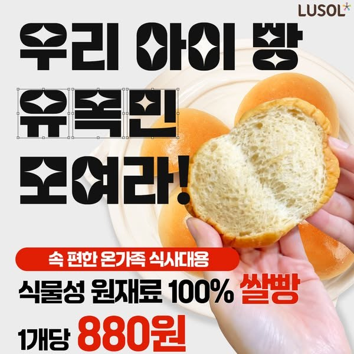
기준으로 삼은 광고
루솔 「루솔이 처음이라면 — 진짜 0원」 · 2025년 4월 6일부터 지금(10월 19일 확인)까지 켜져 있는 광고
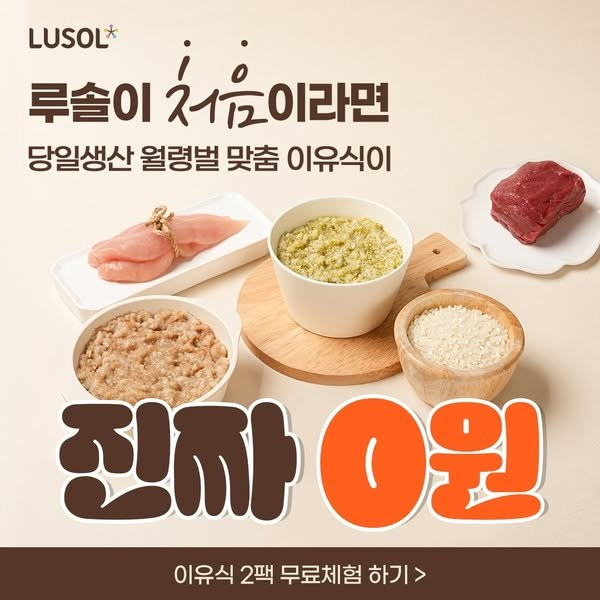
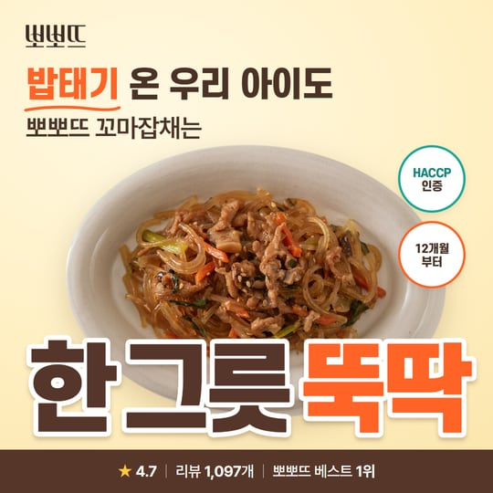
왜 이 광고인가
- 광고주는 성과가 안 나는 광고를 보통 몇 주 안에 끕니다. 이 광고는 약 18개월째 켜져 있습니다. 모은 이미지 광고 중 이유식·반찬 같은 식사류 광고로는 가장 오래 돌아간 광고입니다.
- 광고 본문에 “밥태기 극복! 루솔이 도와줄게요!”가 들어 있습니다. 이번 컨셉(밥태기 온 아이도 잘 먹는다)과 같은 고민을 다룹니다.
- 같은 루솔이 이 구도로 사진만 바꾼 광고도 2025년 6월부터 함께 돌리고 있습니다. 잘 되는 틀이라는 뜻입니다.
그대로 가져온 것
- 순서와 자리 — 왼쪽 위 로고 → 두 줄 제목 → 가운데 음식 사진 → 아주 큰 한 줄 → 맨 아래 진한 갈색 띠.
- 크기 비율 — 원본을 재서 맞췄습니다. 정사각 기준 첫 줄 글자 높이 약 7%, 큰 한 줄 약 19%, 아래 띠 약 9%.
- 큰 한 줄 — 앞 단어는 진한 갈색, 뒤 핵심 단어는 주황색, 둘 다 흰 테두리와 옅은 그림자. 원본 “진짜 0원” → “한 그릇 뚝딱”.
- 큰 글씨가 사진 아래쪽을 살짝 덮는 배치 — 음식은 위쪽이 다 보이게 두었습니다.
- 첫 줄 강조 — 원본은 ‘처음’을 손글씨로 썼고, 우리는 ‘밥태기’에 손으로 그은 밑줄을 넣었습니다.
- 색 역할 — 글자는 진한 갈색, 강조는 주황 한 가지, 아래 띠는 진한 갈색에 흰 글씨.
바꾼 것과 이유
- 배경 — 원본 베이지 대신 상품마다 밝은 파스텔(잡채 노랑, 미트볼 살구, 떡갈비 민트). 요청하신 “밝은 파스텔·애기 느낌” 때문입니다.
- 사진 — 보내주신 사진과 같은 컷을 상세페이지에서 더 큰 원본(로고 없는 것)으로 받아 접시만 오려 썼습니다. HACCP 로고는 사진에서 빠지고, 대신 동그란 “HACCP 인증” 배지로 살렸습니다. 배지 방식은 같은 루솔의 18개월 장수 광고(쌀카스테라)에서 가져왔습니다.
- 글꼴 — 원본의 둥근 굵은 글꼴 대신 회사 기준 글꼴(에스코어드림·프리텐다드). 굵기와 크기 비율은 원본에 맞췄습니다.
- 큰 한 줄의 내용 — 뽀뽀뜨는 무료체험이 없어서, A안은 “한 그릇 뚝딱”, B안은 숫자(별점 4.7·한우 70%·12개월부터), C안은 가격을 넣었습니다.
함께 본 장수 광고 10개
모두 메타 광고 라이브러리(대한민국, 게재 중)에서 10월 19일에 확인한 광고입니다. 날짜는 게재 시작일입니다.
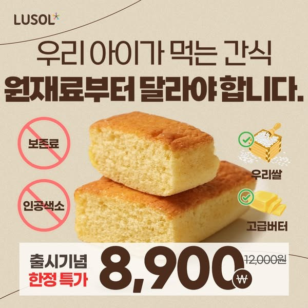
루솔
2025.04.04 게재 시작 · 약 18개월째
사진 옆 동그란 배지로 “보존료·인공색소 없음”. 이번 배너의 HACCP·개월 수 배지를 이 방식으로 넣었습니다.
광고 라이브러리에서 보기 ›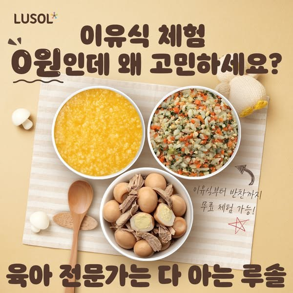
루솔
2025.06.03 게재 시작 · 약 16개월째
기준 광고와 같은 “0원” 메시지를 사진만 바꿔 한 번 더 만든 판. 잘 되는 문구는 사진만 바꿔 계속 돌립니다.
광고 라이브러리에서 보기 ›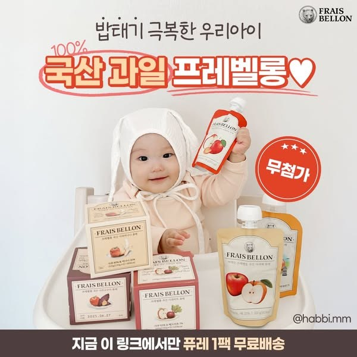
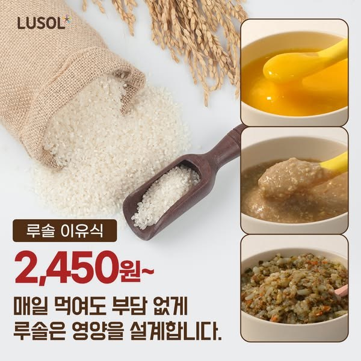
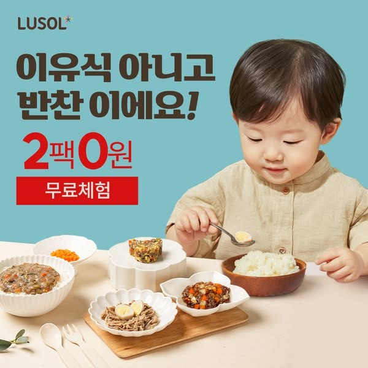
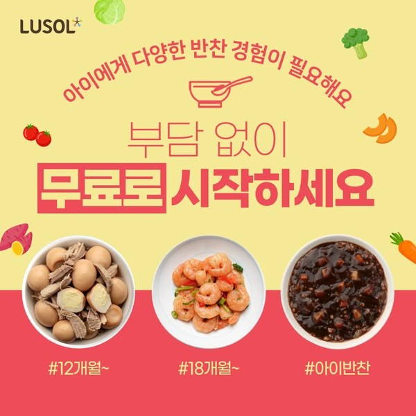
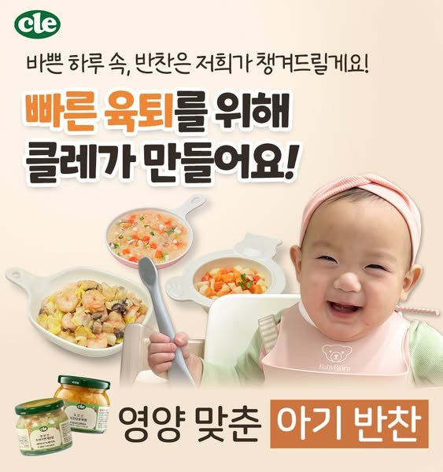
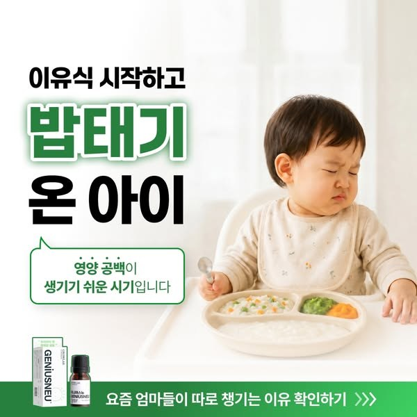
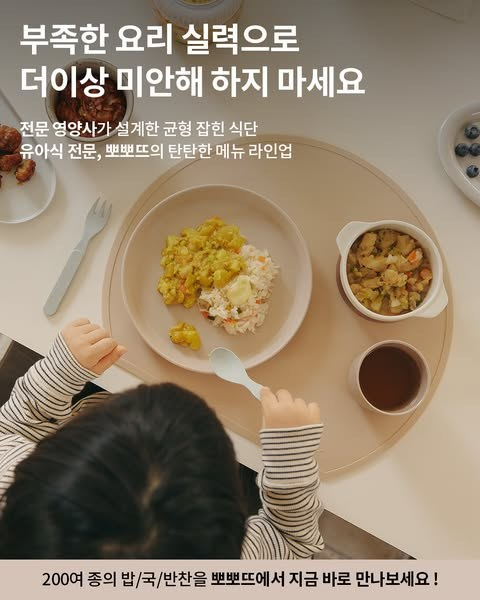
뽀뽀뜨 (현재 광고)
2026.04.27 게재 시작 · 약 6개월째
지금 뽀뽀뜨가 돌리는 광고. 어두운 생활 사진 위 흰 글씨 — 이번 시안은 상품을 크고 밝게 보여주는 쪽입니다.
광고 라이브러리에서 보기 ›


A/B 테스트는 이렇게
- 같은 상품 안에서 A·B·C 세 문구를 같은 예산으로 1주 돌리고, 클릭이 많이 나온 문구를 남깁니다.
- 사이즈는 자리에 맞춰 함께 올립니다 — 정사각은 피드, 세로는 스토리·릴스, 가로는 검색·디스플레이.
- 세로 배너는 화면 위·아래 약 250px을 비워 두었습니다. 인스타그램 이름표·버튼이 그 자리를 덮기 때문입니다.
- 먼저 꼬마잡채로 시작하기를 권합니다. 별점·리뷰·베스트 1위가 모두 있어 세 문구를 공정하게 비교할 수 있습니다.
배너에 쓴 사실과 출처
| 내용 | 출처 |
|---|---|
| 꼬마잡채 별점 4.7 · 뽀뽀뜨 베스트 1위 | 요청서 |
| 후기 1,097개(잡채) · 1,085개(떡갈비) | popote.co.kr 상품 페이지 (10월 19일 확인) |
| 12개월부터(잡채·미트볼) · 13개월부터(떡갈비) | 상품 상세 표기 — 떡갈비는 상세에 “13개월 부터”로 적혀 있어 그대로 썼습니다 |
| 출고일 당일 생산(잡채·미트볼) | 상품 상세 “출고일에 생산” |
| 국산 닭고기·돼지고기, 국산 양송이(미트볼) · 국내산 한우 70%, 190g(떡갈비) | 상품 상세 원재료 표기 |
| HACCP 인증 · 춘천에서 매일 제조 · 가격 | 요청서 (사이트 표기와 같음) |
| 3종이 베스트 반찬 | 홈페이지 BEST OF BEST 첫 줄 세 상품 |